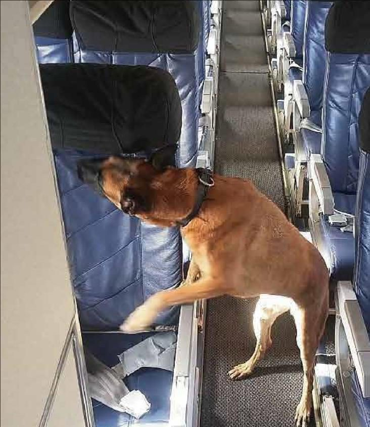

Ten working dog breeds for security work
From breeders with working pedigrees in Belgium, the Netherlands and Germany. Each dog is screened for drive, health and temperament before training starts.
All ten breeds and their jobs
Drive is how hard a dog works for its reward. High-drive dogs suit detection and patrol; territorial breeds suit perimeters.
| Breed | Work | Origin | Drive |
|---|---|---|---|
| German Shepherd | Patrol, detection, protection and police work | Germany | High |
| Belgian Malinois | Patrol, detection, VIP and search and rescue | Belgium | Extreme |
| Labrador Retriever | Narcotics, explosives and search and rescue | UK and Canada | High |
| Springer Spaniel | Vehicles, luggage and cargo searches | England | High |
| Cocker Spaniel | Passive detection in public places | England | Medium to high |
| Dutch Shepherd | Patrol, protection and military detection | Netherlands | Extreme |
| Rottweiler | Property guarding and deterrence | Germany | High |
| Belgian Shepherd | Patrol, protection and detection | Belgium | High |
| Russian Mountain Dog | Estate and perimeter guarding | Russia and the Caucasus | Territorial |
| South African Mastiff | Farm and property guarding | South Africa | High |

Detection breeds that search by scent
Labradors and Springer Spaniels search aircraft, cargo, vehicles and luggage. Their friendly look suits airports and crowds.

Our most deployed dog
The Belgian Malinois has the drive, speed and stamina for patrol, detection and VIP work in one dog, which is why most of our teams work with one.
Guard breeds for property and estates
Large, territorial dogs whose size alone keeps most intruders off a perimeter.
Rottweiler
Property guarding and deterrence, with a steady temperament.
South African Mastiff
The Boerboel, bred in South Africa to guard farms.
Russian Mountain Dog
The Caucasian Ovcharka, a heavy estate guard.
Put a trained dog team on your site
Tell us the site, what you need found or guarded, and for how long. Open every day, 06:00 to 20:00.